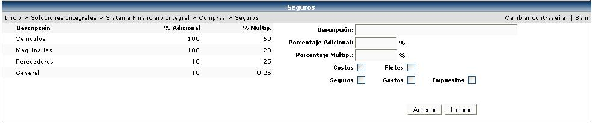

Este catálogo es utilizado por el sistema al momento del cálculo de los seguros asociados a la mercadería que es importada por la empresa, Aquí se define el seguro y los rubros que cubre el mismo, ya sean costos, fletes, gastos, seguros o impuestos.
Adicionalmente se le asigna un porcentaje multiplicador y un porcentaje adicional. El multiplicador es el por el cual se va a multiplicar el monto de la línea de la orden de compra y el adicional es el que se le va a sumar al monto resultante.
Dichos seguros se utilizarán en el Cálculo de Importaciones cuando se creen las Pólizas de Desalmacenaje. (Éste proceso de creación de pólizas se explicará más adelante)
